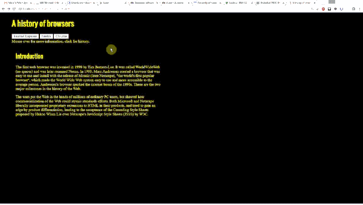

For this WOD, you will modify BrowserHistory6. When the user clicks a button, it displays the corresponding browser in the area below the image rather than relocating to a new page.
Here’s what the page should look like and behave interacting with the user:

Here are the specifications:
<div> with the Introduction text to historyDivieDiv, firefoxDiv, chromeDiv and set the style for each to display: nonehistoryDiv to the innerHTML of the respective history div for that button. For example, the Internet Explorer button would have onclick="historyDiv.innerHTML = ieDiv.innerHTML"HINT: This is MUCH easier than it sounds. Do not over do it! If your code is getting complex you are probably not doing the right thing!
HINT2: Take everything one step and a time and test each step. Think about what is the same and what is different. Copy things that are nearly the same when they work and change the places they are different.
Rx: <6 min Av: 9 min Sd: 12 min DNF: 12+ min
If you get stuck please ask the instructor for help. You are not expected to be able to do this WOD without any help.